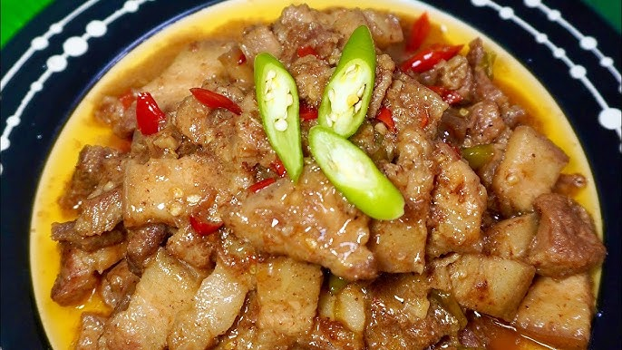

Home
Bicol Express

Description
Bicol express, known natively in Bikol as sinilihan, is a common Filipino dish which was popularized in the district of Malate, Manila, but made in traditional Bicolano style.Source: Google Search
Personal Note: This is a personal recipe rendition by the Filipino learner who created this webpage. Perfecting the authentic "nagmamantika" style took time, aiming for that signature oil reduction where the natural fats render down into a rich, luscious glaze. It delivers an intensely creamy profile balanced by a sharp, fiery kick that redefines a home-cooked family favorite.
Servings: Yields 2 to 3 servings (ideal for a family of 6 when paired with rice and side dishes).
Ingredients
- 500g Pork belly (liempo), cut into small cubes
- 1 cup Thin coconut milk (pangalawang gata)
- 2 tbsp Sauteed shrimp paste (bagoong alamang)
- 10 pieces Green banana chilies (siling pansigang), sliced diagonally
- 5 pieces Bird's eye chilies (sili labuyo), minced
- 1 medium Onion, chopped
- 4 cloves Garlic, minced
- 1 tbsp Ginger, minced
- 1 tbsp Cooking oil
- Salt and black pepper to taste
Steps
Preparation
- Slice the pork belly into uniform, bite-sized cubes to maximize fat rendering.
- De-seed the banana chilies if less heat is preferred, then slice them diagonally into thin strips.
- Measure and portion the fresh aromatics, chilies, and coconut liquid before heating the pan.
Cooking
- Sauté the ginger, garlic, and onions in cooking oil over medium heat until highly aromatic and translucent.
- Add the pork belly to the pan and sear until the exterior turns lightly browned and the fat begins to render.
- Stir in the shrimp paste and cook for 2 minutes to cook off the raw scent and coat the meat.
- Pour in the thin coconut milk, bring to a gentle boil, then lower the heat to simmer until the pork becomes completely tender.
- Add the sliced banana chilies and minced bird's eye chilies.
- Simmer uncovered on medium-lo heat, stirring occasionally, until the liquid reduces drastically and the coconut oil separates ("nagmamantika").
- Adjust the final flavor profile with salt and freshly cracked black pepper once the rendering process is complete.
Serving Suggestions
- Ladle hot onto a serving platter, ensuring the rendered coconut oil glazes the meat beautifully.
- Serve alongside a generous mountain of steaming white rice to temper the intense heat and richness.
- Pair with ice-cold water or your choice of cold beverage to balance the fiery chili kick.